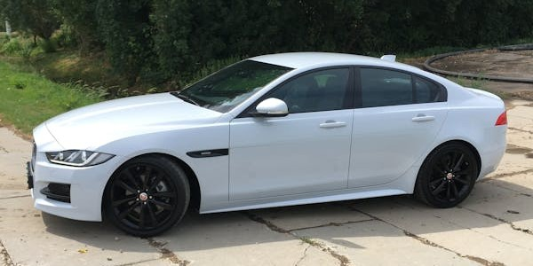

The Jaguar XE (X760) is a car manufactured by Jaguar Land Rover and marketed under their Jaguar marque since April 2015. A large family car, it has a four-door saloon car body style and is aimed at the compact-executive market segment. It is front engined and sold with both rear-wheel drive and all-wheel drive.
The XE was announced, but not displayed, at the 2014 Geneva Motor Show and debuted globally on 8 September 2014 in London.Sales were expected to begin globally in 2015, followed by the United States in 2016. Production formally commenced on 13 April 2015 at Jaguar Land Rover's Solihull plan
The XE was the first application of Jaguar Land Rover's new 2.0 L turbocharged Ingenium four-cylinder engine. The Ingenium technology licenses the Multiair/UniAir electrohydraulic variable valve lift system from Schaeffler.Group, which Schaeffler in turn licensed from Fiat Chrysler Automobiles in 2001. The system, developed by Fiat Powertrain Technologies, is a hydraulically-actuated variable valve lift (VVL) technology enabling "cylinder by cylinder, stroke by stroke" control of intake air directly via a gasoline engine's inlet valves.The four-cylinder is available in both petrol and diesel variants, in a range of different power outputs. The 163 PS (120 kW; 161 hp) diesel significantly reduced consumption and carbon emission figures, and is capable of fuel consumption less than 68.9 mpg‑imp (4.10 L/100 km; 57.4 mpg US) and producing CO2 emissions of only 99 g/km. The cleanest models in Britain pay no annual Vehicle Excise Duty.